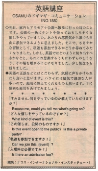

参加できますか。
先日、家内とアラモアナ公園へ散歩に行った時のことです。公園の一角にテントを張って、おもしろそうな催しをやっていました。あたりの雰囲気から誰でも自由に参加できるように思えました。そこで、ささやかな冒険として、私達も参加できるかどうか尋ねてみたくなりました。しかし、英語ではどのように切り出すべきかなどと、あれこれ思案するうちにわずらわしくなり、その場を離れることになりました。少し無念さも残りました。
英語などにはこだわらず、気軽に声をかけられることかと思います。ハワイには、陽気で親切な人が多いので、親切に答えてくれるものと思います。下に便利な表現をあげてみましょう。
すみません、何をやっているのか教えて頂けますか。
Excuse me, could you tell me What's going on?
どんな催しをやっているのですか。
What kind of events is this?
この催しは、公開のものですか。
Is this event open to the public?
Is this a private party?
私達も参加できますか。
Can we join this (event) ?
入場料は必要ですか。
Is there an admission fee?

| © 1995-2013 NACOS International Institute. All Rights Reserved. |